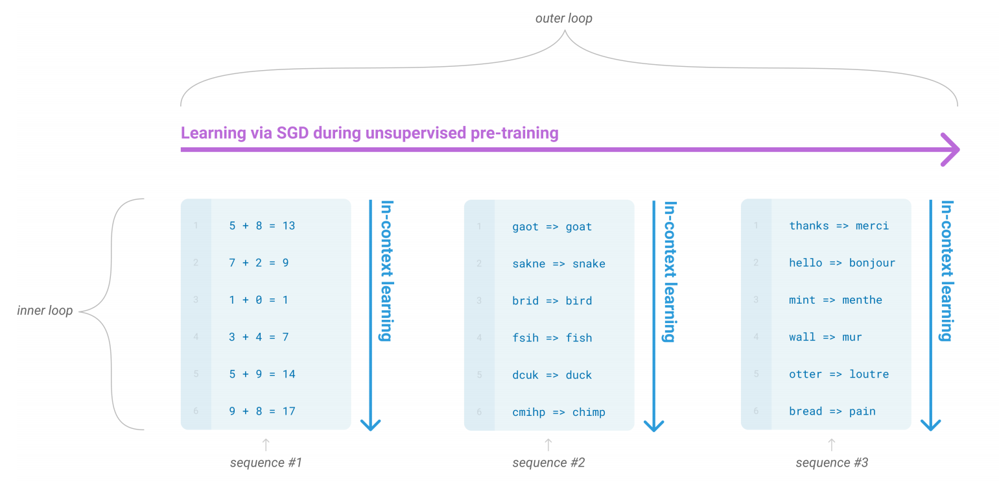
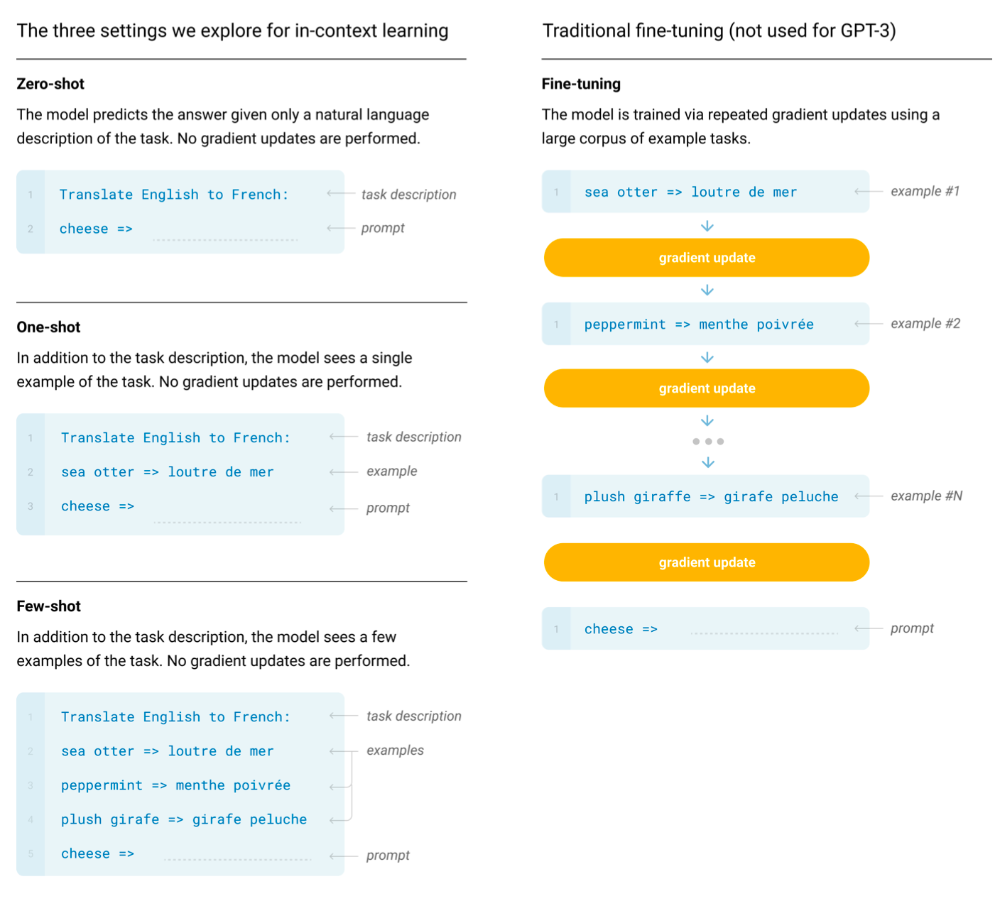
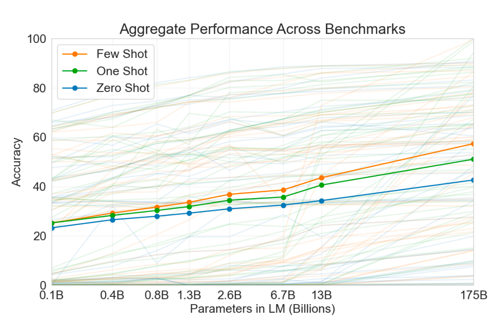
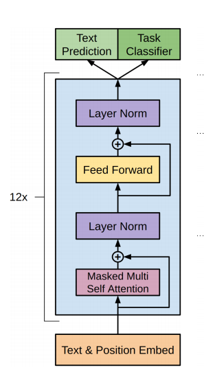

GPT 三部曲之三
简介
GPT 系列是 OpenAI 推出的预训练模型，时至今日已经包含了三个模型，今天我来读的是 GPT 系列第三部，出自 2020 年发表在 NeurIPS 上的论文《Language Models are Few-Shot Learners》。秉着最新的成果往往更重要的原则，GPT 系列我打算倒着读。从名字可以看出，GPT-3 关注点在于少样本学习，虽然预训练模型在下游任务微调上取得了很好的成果，但是下游任务的微调往往也需要一定规模的数据集。GPT-3 希望能够用更大的模型（1750 亿）来将微调任务转变为少样本学习任务。
预训练模型
像 BERT、GPT 此类的预训练模型，虽然经过微调后能够很好地应用于各种下游任务。但是微调任务往往也需要数万规模的标注数据集。而对于人类来说，并不需要大规模的数据集才能学习到特定任务，只需要一个简单的描述（例如，请告诉我这些句子的情绪是开心的还是低落的）或者很少的数据（这是两个勇敢的人的例子，请再给出一个勇敢的例子）。因此，如何让预训练模型能够像人一样灵活、通用地解决问题，成了研究者追求的目标。
解决上述问题的想法之一是通过元学习（meta-learning）。元学习的。在语言模型中，元学习意味着模型在训练阶段能够拥有识别通用模式的能力，并在推理阶段快速识别并适应特定任务，如下图所示。

GPT-2 就是通过上下文学习来达到上述效果，具体来说，GPT-2 会将任务嵌入到预料中，例如一个英语到法语的翻译任务的语料为：“”I’m not the cleverest man in the world, but like they say in French: Je ne suis pas un imbecile [I’m not a fool].”，进而避免了显式的任务枚举、编码等操作。在这样的语料上训练语言模型，来达到多任务学习的效果。但是这样的一个问题就是模型（虽然有十几亿参数）可能很难学习到这样复杂的依赖关系。虽然 GPT-2 取得了一些初步的结果，但是效果仍远不如微调。

参数膨胀
自从 NLP 中预训练模型提出以来，参数越多，性能越好基本成为了大家的共识。参数膨胀也成为了预训练模型更新换代的趋势。从 2018 年 BERT 的 3 亿参数，到 GPT-2 的 15 亿参数，再到 2020 年 GPT-3 的 1750 亿参数，每次模型增大都带来了下游任务的改进。其算力的要求也让预训练模型成为大公司垄断的研究方向。
在论文中，作者还实验了从 1.25 亿参数到 130 亿参数间的一系列小模型，并对其在零样本、单样本、少样本实验上的性能进行了评估，结果如下图所示：

可以看到，三种任务上的性能都随参数的增加而得到提升。
数据污染
在使用像 Common Crawl 这样大规模数据集的时候，可能会出现数据污染问题：由于数据规模过大，测试集的一些样本出现在训练集之中，使得评估不准确。GPT-3 使用的是来自互联网上的文本数据，更有可能出现这样的问题。因此，作者开发了工具来量化数据污染对实验的影响，并对受较大影响的数据集进行了标注。
实验方法
实验的设置与 GPT-2 类似，不同的是，GPT-3 对比了上下文学习的不同设置，包含以下四种方法（单样本与零样本学习区分开来的原因在于，在某些任务例如与人类对话中，单样本学习更匹配）：
| 方式 | 特点 | 优点 | 缺点 |
|---|---|---|---|
| 微调 | 在下游任务的监督数据集上更新权重 | 性能好 | 每个任务都需要较大规模的监督数据 |
| 少样本学习 | 在下游任务推理时提供 K 个样本（10-100）作为演示，不更新权重 | 减少了对监督数据规模的要求 | 效果比微调差的多 |
| 单样本学习 | 除了任务的自然语言描述，只有一个演示样本。 | ||
| 无样本学习 | 只接受任务的自然语言描述，无演示样本。 | 使用起来最便利 最接近人类执行任务的方式 |
挑战性最强，在某些情况下非常困难 |
四种方式介绍如下图所示：
模型
"GPT-3 的模型与 GPT-2 类似，除了 GPT-3 是交替使用密集 Transformer 与局部带状稀疏注意力机制的 Transformer"。这基本就是论文中对 GPT-3 模型的全部介绍了。我翻到 GPT-2 的论文，"GPT-2 是基于 Transformer 的语言模型架构，模型细节大体与 GPT 类似，除了将层标准化提前到子块的输入位置，并在最后一个自注意力机制块后加入层标准化"。套娃现象属实有点严重。
下面是 GPT-1 的结构，看起来就是个 12 层的 Transformer。上面提到的那些局部带状系数注意力机制的 Transformer 等到后面再补充吧。

总结
GPT 系列的模型结构变化不大，重要的一直是实验部分，从普通的预训练语言模型到试图通过少样本学习解决各种下游任务的庞然大物。整个 GPT-3 的论文，只有十页左右在介绍非实验部分，剩下的几十页都是实验。这次因为时间原因先介绍到这里，实验部分等后续有时间再补充吧。
这篇论文一个最大的写作特点在于引用非常的奇怪。可能是我见识比较少，但是 word2vec，glove 这种写出来非常直观的方法，后面加个引用也非常清晰，论文中却不提缩写，只使用的作者姓首字母加年份的引用，像 word2vec、glove 的引用名分别为 MCCD13、PSM14。只看这个引用让人不知所云，还要点超链接浪费时间。